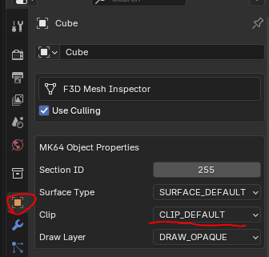
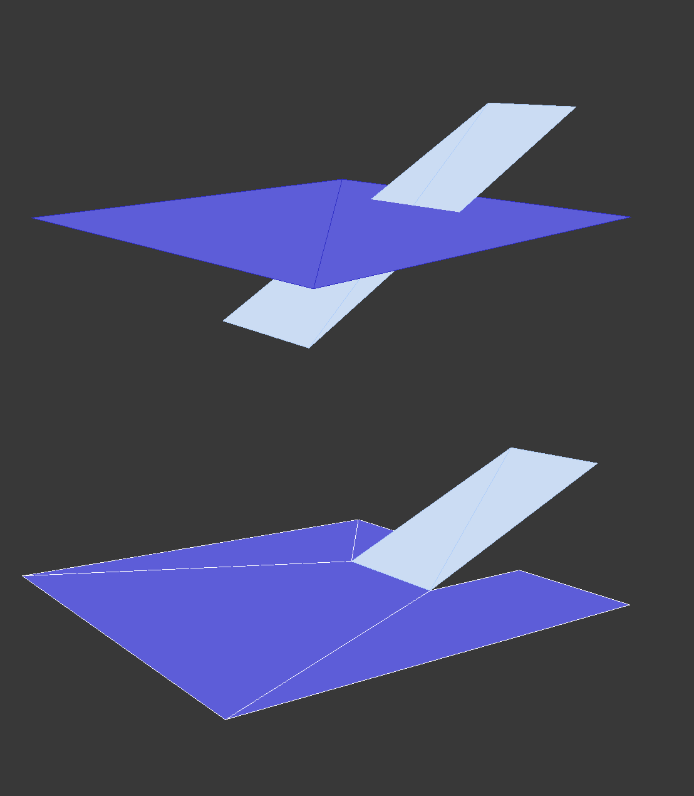
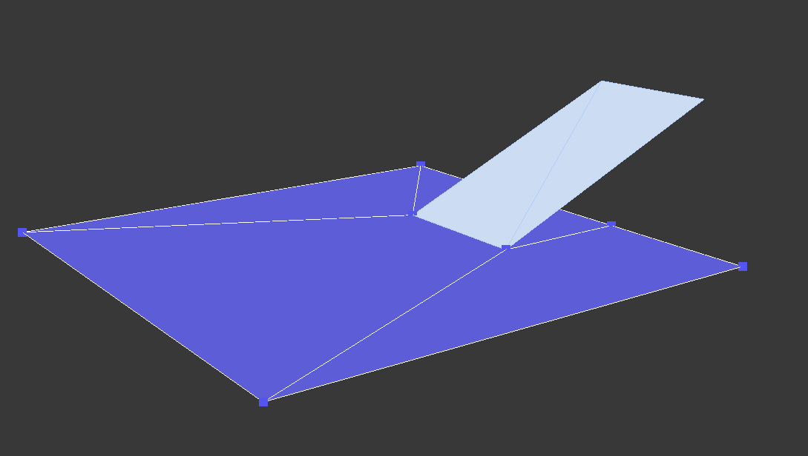
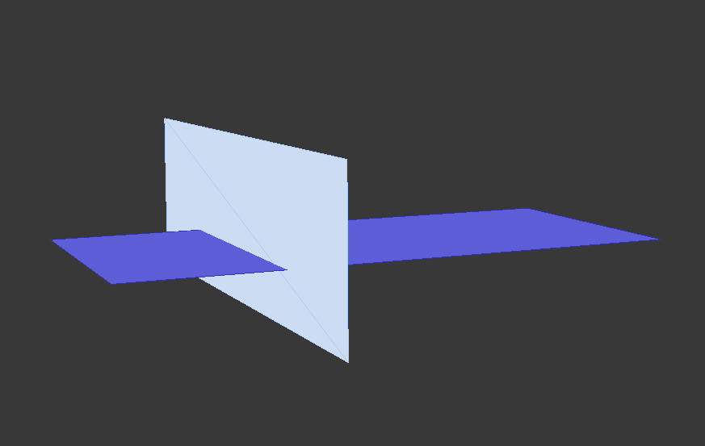
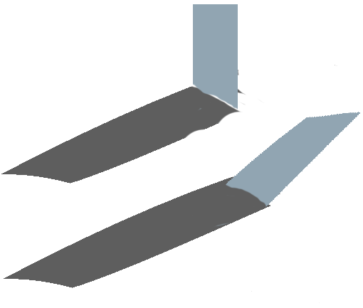
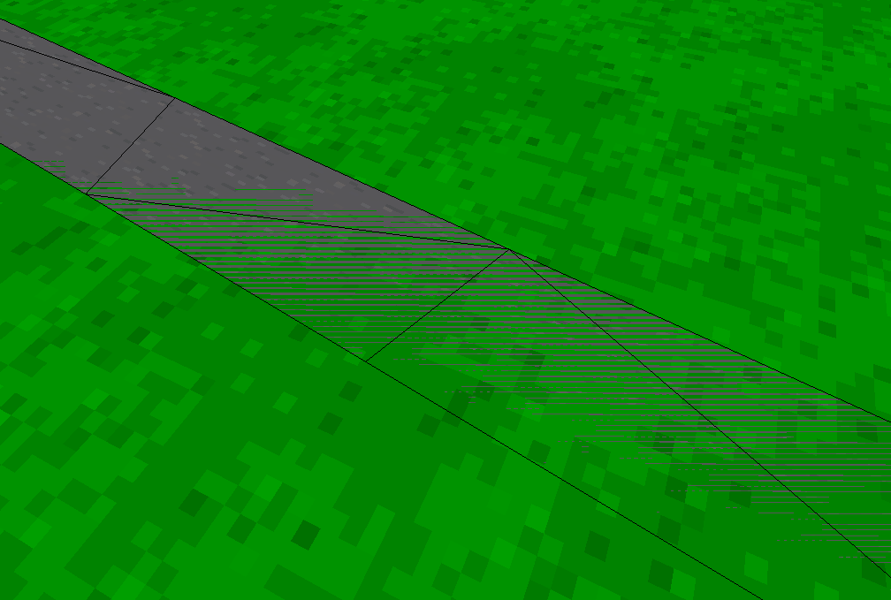
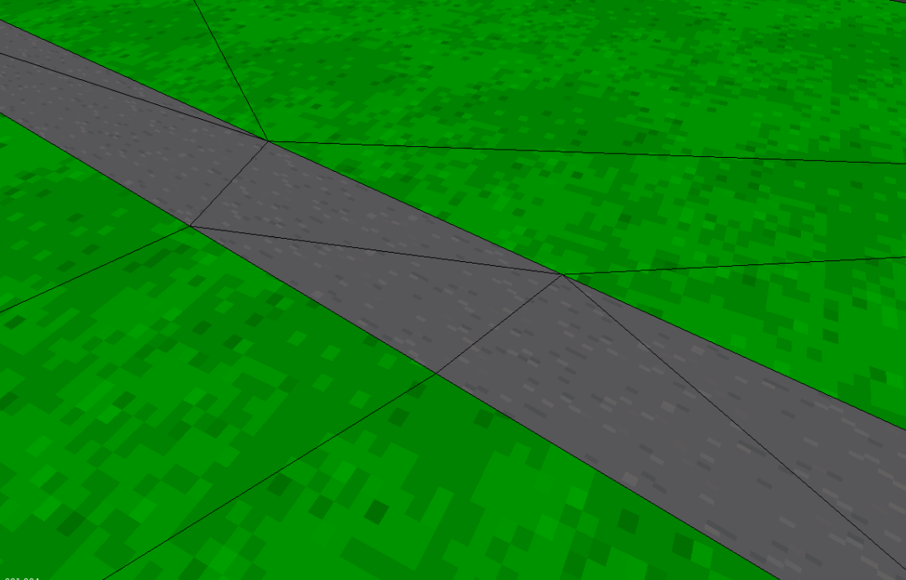

Loading...
Searching...
No Matches
Troubleshooting
Troubleshooting
Players Spawn in the Air
Players and actors are placed at 3000.0 if the game cannot find a surface
- The surface must be a plane not a cube
- Must be surface from (0,0,0) to (0,0,-420) in Blender units this is (0,-16.8,0) like so:
- The surface must be set to default clip or surface. Clip none means players can drive through the mesh

Scaling Issues or Missing Geometry
- Set scale to 100.
- Select the geometry, press CTRL+A and click
Apply Transformations- Lets say a vertex (edit mode) is placed at (10, 0, 0). And then the mesh object (object mode) is placed at (10, 0, 0)
- On export the object will be placed at 20
- Apply transformations resets the object location to (0,0,0)
- Lets say a vertex (edit mode) is placed at (10, 0, 0). And then the mesh object (object mode) is placed at (10, 0, 0)
Traversal Issues
Certain rules must be followed for players to correctly traverse from one mesh to another mesh.
Driving Through Surfaces or onto Walls
- The first example below will result in players ignoring the ramp. They will drive through the ramping geography keeping to the current racing surface.
- The second example correctly transfers the player onto the ramp.

- Players always stick to their current surface unless it ends and another begins. The below also does not consitute as good practice.

- The above variation will result in the player sticking to the original ground and not transferring to the ramp.
Walls
- The harsh angle of this wall will likely work as intended. However, it may result in unknown behaviour and as such is not good practice.
- The bottom of the wall should perfectly align with the surface for it to work reliably as a wall. Any gaps can be driven through.

- Here is an example of good modelling practices

Render Conflicts
In-game example:
Another example:

- Observe that two separate mesh objects are overlapping each other. Solve this by adding more vertices to the objects and connecting the vertices together:

This may seem tedius. Especially if you rely on the extrude tool to make the track. However, there are other tools and tricks that help prevent this issue from happening as much
Source: https://github.com/DeadHamster35/Tarmac64/wiki/Troubleshooting